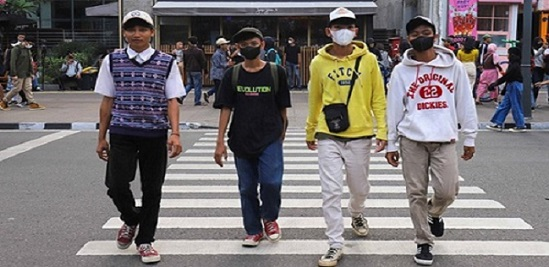

Citayam Fashion Week di Dukuh Atas Mulai Sepi
Hampir seperti jalan-jalan biasanya, kawasan Stasiun BNI City, Dukuh Atas, Jakarta Pusat, atau yang biasa disebut Citayam Fashion Week (CFW), kini mulai kembali seperti semula. Meski sekumpulan remaja masih biasa ditemui di kawasan itu, keramaian mulai berkurang setiap harinya sejak ada larangan berlenggak-lenggok di zebra cross beberapa waktu lalu. Warga Bojonggede, Boni (19 tahun) mengaku masih berniat datang ke tempat yang didatanginya sejak beberapa bulan lalu, meski fashion show di zebra cross dilarang aparat. Menurutnya, tempat itu berfungsi sebagai tempat umum dan bisa dinikmati semua orang.
“Yang nggak boleh kan katanya catwalk di situ. Kalo cuman nongkrong kayaknya nggak ada larangan,” kata Boni di kawasan Dukuh Atas. Dia berdalih, kedatangannya ke tempat itu sebagai pencarian tempat layak untuk bergaul. Meski demikian, dia menyayangkan beberapa temannya yang sudah tidak datang ke lokasi karena satu dua alasan. “Mungkin mulai sepi karena lagi nggak pada mood atau kecewa soal CFW akhir-akhir ini,” ujarnya. Hal serupa juga diutarakan oleh anak muda lainnya. John (18 tahun) begitu dia ingin disapa, masih ingin tetap berada di kawasan tersebut, selepas aktivitas bersekolahnya yang usai pada tahun ajaran lalu. Pemuda asal Cilincing itu, lebih memilih bergaul dengan anak-anak yang baru dikenalnya di Dukuh Atas sejak hampir setengah tahun lalu. Meski demikian, dia tak menampik ada beberapa teman yang kini jarang datang ke tempatnya biasa berkumpul. Ditanya saran pemerintah agar anak-anak di Dukuh Atas bisa pindah dan berkumpul ke Sarinah, John belum mempertimbangkannya. Dia mengaku, masih merasa lebih nyaman di tempat di mana teman-temannya berada. “Nggak tahu sih kalau itu. Di sini banyak temen soalnya,” kata dia sambil tertawa. Mulai sepinya para pengunjung ke lokasi Citayam Fashion Week, juga dirasakan oleh para tukang parkir sekitar lokasi. Meski tak mengeluhkan soal pendapatan, Dodong, salah satu penjaga parkiran di kawasan tersebut menyebut jika keramaian kian berkurang.